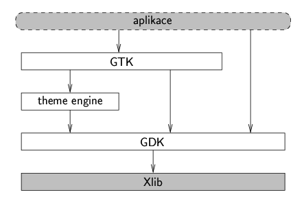

Po minulém úvodním èlánku se teï u¾ opravdu pustíme do programování. První toolkit, na který se podíváme blí¾, je GTK+. Zkratka pochází z názvu „The Gimp Toolkit“. GTK+ toti¾ pùvodnì vzniklo jako toolkit pro program Gimp. Dnes je na tomto toolkitu postaveno mnoho aplikací a tvoøí základ desktopového prostøedí GNOME. Budeme se zabývat souèasnou stabilní verzí GTK+ 2.2. Proti pøedchozí ¹iroce pou¾ívané verzi 1.2 obsahuje GTK+ 2 hodnì vylep¹ení, napø. lep¹í widgety pro seznamy, stromy, zobrazení a editaci textu. Také se zlep¹ila kvalita dokumentace, nicménì stále zùstávají nedokumentované funkce. Pro pochopení detailù je èasto nutné kombinovat referenèní dokumentaci, tutoriály, ukázkové programy a zdrojové texty toolkitu.
Toolkit GTK+ je napsaný v jazyce C. Proto¾e je objektovì orientovaný, bylo potøeba v C implementovat prostøedky pro manipulaci s objekty, které jsou v jazycích jako C++ souèástí jazyka. Tøídy jsou definované jako struktury, odvozená tøída obsahuje strukturu bázové tøídy jako svou první polo¾ku. Virtuální metody jsou realizované pomocí signálù. Zde je tøeba odli¹it unixové signály (asynchronní) a signály GTK+, které poskytují mechanismus pro synchronní volání registrovaných handlerù. Pro GTK+ existují i API (language bindings) pro jiné jazyky, ne¾ C. Podporované jsou Ada, C++, Perl, Python, aj. V C++ lze pou¾ít buï C-èkové rozhraní, nebo knihovnu gtkmm (døíve GTK--). Jednotlivé tøídy GTK+ jsou v gtkmm „obaleny“ tøídami jazyka C++. Grafické rozhraní programu se definuje buï pøímo v kódu programu posloupností volání funkcí na vytvoøení jednotlivých widgetù, nebo lze pou¾ít nástroj Glade pro vizuální interaktivní návrh vzhledu aplikace. Programátor my¹í umís»uje jednotlivé widgety na obrazovku a nastavuje jejich parametry. Glade následnì vygeneruje kostru aplikace obsahující kód na vytvoøení widgetù. Do této kostry je pak nutné doplnit zbytek programu, pøedev¹ím tìla handlerù signálù.
Ne¾ se pustíme do programování, musíme si je¹tì ujasnit nìkolik základních pojmù. Widget je prvek u¾ivatelského rozhraní (napø. check box nebo editaèní textový øádek). V programu je reprezentovaný objektem tøídy odvozené od GtkWidget. Objekt je instance tøídy GObject nebo odvozené tøídy. Widget je také objekt, proto¾e GtkWidget je potomkem GObject. Okno ve smyslu GTK+ je top-level okno programu (hlavní okno nebo dialog). Pomocná knihovna GDK, která tvoøí rozhraní mezi GTK+ a Xlib, pou¾ívá termín okno pro strukturu reprezentující X okno spravované X serverem. GDK okna existují v klientovi. Naopak X okno je zdroj poskytovaný X serverem, klient si dr¾í pouze jeho ID (èíselný identifikátor). Je to obdélníková oblast obrazovky, do které mù¾e klient kreslit. Kdy¾ X server po¹le událost, je její souèástí informace o tom, v kterém oknì nastala. Aby byl widget vidìt na obrazovce, potøebuje X okno, do nìho¾ bude kreslit. Typicky má jeden widget jedno GDK a tedy i jedno X okno. Korespondence 1:1 ale není nutná. Widget mù¾e pou¾ívat nìkolik X oken. Naopak widgety, které nepotøebují pøijímat události – napø. statický text – nemají vlastní X okno. Pro kreslení pou¾ívají X okno rodièovského widgetu.
X server posílá klientovi informace o aktivitì u¾ivatele ve formì událostí. Události se zpracovávají asynchronnì. Pøíchozí událost je ulo¾ena do fronty. Kdy¾ na ni nìkdy pozdìji pøijde øada, hlavní cyklus zpracování událostí ve funkci gtk_main ji vyzvedne a zpracuje. Widgety komunikují pomocí signálù. Kdy¾ se s widgetem stane nìco dùle¾itého, na co je potøeba reagovat (napø. u¾ivatel vybere polo¾ku menu), widget emituje signál voláním g_signal_emit_by_name. Následnì jsou postupnì zavolány v¹echny handlery registrované pro danou dvojici zdrojový widget, typ signálu. Signály se zpracovávají synchronnì – funkce emitující signál zavolá v¹echny pøíslu¹né handlery a teprve pak se vrátí. Události jsou funkcí gtk_main pøelo¾eny na signály a následnì obslou¾eny. Handlery signálù dostávají jako parametr widget, který signál emitoval, a ukazatel nastavený pøi registraci handleru funkcí g_signal_connect. Nìkteré typy signálù pou¾ívají dal¹í parametry. Napøíklad handler událostí dostává strukturu popisující událost. Handlery mohou mít i návratovou hodnotu. Handlery událostí vrací boolovskou hodnotu. TRUE znamená, ¾e událost byla obslou¾ena a není tøeba volat dal¹í handlery. Kdy¾ handler vrátí FALSE, událost se pøedá dal¹ímu handleru v poøadí. GTK+ nekontroluje, zda má handler správné typy parametrù a návratové hodnoty. Pokud programátor pou¾ije ¹patný typ handleru, obvykle to skonèí havárií programu.
Pøi výkladu nového programovacího jazyka nebo nástroje se obvykle zaèíná triviálním programem ve stylu „hello world“. Ani my neudìláme výjimku. Celý zdrojový kód programu je v souboru hello.c. Program otevøe okno s tlaèítkem a po stisknutí tlaèítka skonèí.
Na zaèátku je potøeba naèíst hlavní hlavièkový soubor GTK+. Ten zajistí naètení v¹ech dal¹ích potøebných hlavièkových souborù GTK+ a podpùrných knihoven.
#include <gtk/gtk.h>Funkce main musí na zaèátku inicializovat toolkit pomocí
gtk_init(&argc, &argv);Této funkci se pøedávají parametry z pøíkazového øádku. GTK+ odebere parametry, které zná, napø. --display (jméno X serveru, ke kterému se má pøipojit), --no-xshm (nebude se pou¾ívat sdílená pamì» pro komunikaci s lokálním X serverem), nebo --sync (synchronní komunikace s X serverem pou¾ívaná pro ladìní). Funkce gtk_init inicializuje objektový systém GTK+ a musí se volat jako první funkce toolkitu.
Následuje vytvoøení top-level okna
window = gtk_window_new(GTK_WINDOW_TOPLEVEL);Parametr GTK_WINDOW_TOPLEVEL znamená, ¾e okno dostane rámeèek a bude spravováno window managerem. Hlavní okno bude mít pøipojené dva handlery signálù.
g_signal_connect(G_OBJECT(window), "delete_event",
G_CALLBACK(delete_event), NULL);
g_signal_connect(G_OBJECT(window), "destroy",
G_CALLBACK(destroy), NULL);
Pøi registraci handlerù se zadává dvojice objekt a jméno signálu, pro kterou
se handler registruje. Následuje handler a hodnota, pøedávaná handleru jako
poslední parametr. Handler dostane ukazatel na objekt jako první parametr. Za
ukazatelem na objekt mohou je¹tì následovat parametry specifické pro urèitý
signál. Ve volání g_signal_connect se objevuje charakteristický rys
GTK+ – volání pøetypovacích maker. Makro G_OBJECT pøetypuje
parametr na GObject. Pro ka¾dou tøídu existuje makro, které dostane
ukazatel, zkontroluje, zda lze pøetypovat a vrátí pøetypovaný ukazatel nebo
vypí¹e chybové hlá¹ení. Takto se vìt¹inou pøetypovává nìjaký objekt na objekt
pøedka, co¾ se v C++ dìje automaticky. C nezná hierarchii dìdiènosti a
odvozená tøída, i kdy¾ obsahuje objekt zdìdìné tøídy na zaèátku struktury, je
pro pøekladaè jiný typ a pøetypování je nutné explicitnì napsat.
Událost delete_event vygeneruje window manager, kdy¾ u¾ivatel stiskne zavírací tlaèítko na rámeèku okna. Obvyklá reakce na tuto událost je taková, ¾e se program zeptá u¾ivatele, zda chce skonèit a popøípadì ulo¾it na disk neulo¾ená data. Kdy¾ u¾ivatel potvrdí ukonèení programu, handler vrátí FALSE a tím umo¾ní pokraèování zpracování události. Kdy¾ nejsou pøipojené dal¹í handlery, vyvolá se standardní obsluha, která zru¹í top-level okno. Jestli¾e se u¾ivatel rozhodne, ¾e se program nemá ukonèit, handler vrátí TRUE, událost je tím obslou¾ena a dal¹í handlery se nevolají. Handler na¹eho „hello world“ pouze vypí¹e hlá¹ení na standardní výstup a nechá program pokraèovat.
static gint delete_event(GtkWidget *widget, GdkEvent *event, gpointer data)
{
g_print("delete event occurred\n");
return TRUE;
}
Widget generuje signál destroy pøi svém zru¹ení. Kdy¾ je zavøeno hlavní okno aplikace, je potøeba pøeru¹it zpracování událostí. Jinak by sice program zmizel z obrazovky, ale bì¾el by dál. O ukonèení se postará handler
static void destroy(GtkWidget *widget, gpointer data)
{
gtk_main_quit();
}
V dal¹ím kroku vytvoøíme tlaèítko s nápisem „Hello World“ a vlo¾íme ho do okna.
button = gtk_button_new_with_label("Hello World");
g_signal_connect_swapped(G_OBJECT(button), "clicked",
G_CALLBACK(gtk_widget_destroy), G_OBJECT(window));
gtk_container_add(GTK_CONTAINER(window), button);
Kdy¾ u¾ivatel stiskne tlaèítko, a» u¾ s pou¾itím klávesnice nebo my¹i, je
vygenerován signál clicked. Jako handler jsme nastavili funkci
gtk_widget_destroy, která zru¹í widget zadaný jako parametr. Proto¾e
chceme zru¹it celé okno a ne jenom tlaèítko, voláme
g_signal_connect_swapped. Tato funkce funguje podobnì jako
g_signal_connect, ale závìreèný parametr se pøedává handleru jako
první a ukazatel na objekt, který emitoval signál, jako poslední parametr.
O parametry funkce se v C stará volající, proto nevadí, ¾e handler má jen jeden
parametr a pøi volání dostane dva. Dùle¾ité je, ¾e souhlasí typ prvního
parametru. Podobnì bychom nemuseli definovat handler destroy a místo
nìj bychom pøipojili pøímo funkci gtk_main_quit.
Ka¾dý widget musíme zobrazit, jinak by sice existoval jako objekt v programu, ale nebyl by vidìt na obrazovce.
gtk_widget_show(button); gtk_widget_show(window);Místo volání gtk_widget_show pro ka¾dý widget mù¾eme zobrazit widget a v¹echny v nìm obsa¾ené widgety funkcí gtk_widget_show_all. Pøedchozí dva øádky bychom mohli zmìnit na
gtk_widget_show_all(window);Nakonec spustíme zpracování událostí
gtk_main();Kdy¾ je tato funkce ukonèena pomocí gtk_main_quit v handleru destroy volaném pøi zavøení okna, ukonèíme program návratem z funkce main.
Ná¹ první program v GTK+ pøelo¾íme pøíkazem
gcc -o hello `pkg-config --cflags --libs gtk+-2.0` hello.cUtilita pkg-config se postará o správné nastavení kompilátoru a linkeru. Kdy¾ se zavolá s pøepínaèem --cflags, vrátí seznam cest, kde jsou hlavièkové soubory pro GTK+ nebo pro jinou knihovnu, její¾ jméno je zadané jako poslední parametr. Verze GTK+ 2.2 opravuje chyby pøedchozí verze 2.0 a jinak je s ní kompatibilní, proto v pkg-config obì verze pou¾ívají název gtk+-2.0. Seznam cest se vypisuje ve tvaru direktiv kompilátoru -Iadresáø. Pøepínaè --libs zpùsobí vypsání seznamu potøebných knihoven a adresáøù, kde jsou knihovny ulo¾eny (direktivy -Ladresáø a -lknihovna).
Pro øízení pøekladu vìt¹ích programù slo¾ených z více zdrojových modulù se obvykle pou¾ívá utilita make. Úsek Makefile pro ná¹ první program v GTK+ by vypadal nìjak takto:
CC=gcc CFLAGS=`pkg-config --cflags gtk+-2.0` LIBS=`pkg-config --libs gtk+-2.0` hello: hello.o $(CC) -o hello $(LIBS) hello.o hello.o: hello.c $(CC) $(CFLAGS) -c hello.c
Na obr. 1 jsou schematicky znázornìny vztahy mezi hlavními knihovnami.

Obr. 1: Knihovny v GTK+
Nad základní klientskou knihovnou Xlib le¾í vrstva GDK (GTK Drawing Kit). Takto knihovna obaluje volání Xlib a má dvì hlavní funkce. Za prvé ponìkud zjednodu¹uje komplikované API Xlib a za druhé usnadòuje pøenositelnost na jiné grafické systémy ne¾ X (napø. MS Windows nebo linuxový frame buffer), proto¾e se mìní pouze implementace funkcí GDK a nikoliv API. Proto mohou vy¹¹í vrstvy toolkitu zùstat témìø nezmìnìné. Dal¹í vrstvu tvoøí vlastní toolkit GTK+. Skládá se z implementace objektového systému, podpory zpracování událostí a signálù a tøíd pro jednotlivé widgety. Aplikace volá funkce z GTK+. Pokud potøebuje pøímo kreslit vlastní grafiku, definovat nové tøídy widgetù nebo provádìt speciální operace s okny, mù¾e volat i GDK. Mezi knihovnami GTK+ a GDK le¾í je¹tì theme engine. Je v ní definován vzhled jednotlivých widgetù. Implementace widgetù v GTK+ nevolají pøímo funkce pro kreslení grafických primitiv (napø. èar nebo obdélníkù) z GDK. Místo toho volají funkce z theme, které kreslí slo¾itìj¹í objekty, napø. celé tlaèítko. Theme engine pøekládá tyto komplexní kreslicí operace do série grafických primitiv. Výmìnou této knihovny – i za bìhu programu – lze mìnit celkový vzhled u¾ivatelského rozhraní.
Balík GTK+ obsahuje tyto hlavní knihovny: